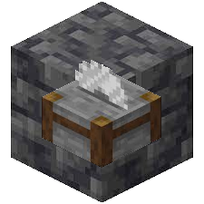

CURRENT PROJECTS
Github Links:
GitHub Account:
https://github.com/NoComment1105
_______________________________
Periodic Mod:
 https://github.com/NoComment1105/periodic-mod-minecraft
https://modrinth.com/mod/periodic
https://www.curseforge.com/minecraft/mc-mods/periodic
https://github.com/NoComment1105/periodic-mod-minecraft
https://modrinth.com/mod/periodic
https://www.curseforge.com/minecraft/mc-mods/periodic
_______________________________
SmoothBedrock By Blayyke:
 https://github.com/NoComment1105/SmoothBedrock-by-Blayyke
https://modrinth.com/mod/SmoothBedrock-by-Blayyke
https://curseforge.com/minecraft/mc-mods/SmoothBedrock-by-Blayyke
https://github.com/NoComment1105/SmoothBedrock-by-Blayyke
https://modrinth.com/mod/SmoothBedrock-by-Blayyke
https://curseforge.com/minecraft/mc-mods/SmoothBedrock-by-Blayyke
_______________________________
DeepslateCutting:

https://github.com/NoComment1105/DeepslateCutting-fabrc
https://modrinth.com/mod/deepslatecutting
https://curseforge.com/minecraft/mc-mods/deepslatecutting
_______________________________
Easier Items Data pack:
https://github.com/NoComment1105/Easier-items-datapck
_______________________________
Upgrade Everything Data pack:
https://github.com/NoComment1105/upgrade-everything
_______________________________
Chocolatify Resource Pack:
https://github.com/NoComment1105/chocolatify
_______________________________
More Pressure Plates Data Pack:
https://github.com/NoComment1105/more-pressure-plates
_______________________________
This Website ;)
https://github.com/NoComment1105/nocomment1105.github.io
https://nocomment1105.github.io
________________________________________________________________________
Planned Projects:
A Discord Bot!
I have never done anything with Discord bots, but i feel it would be a fun learning experience!
More mods!
I have no plans yet, but i enjoy spending my free time making mods, so i'll happily make more as and when ideas
come about!
________________________________________________________________________
Social Media Links:
Discord:
https://discord.gg/28N2Eeq2tT
Twitter:
https://twitter.com/NoComment_MC
Instagram:
https://instagram.com/da.big.aaa